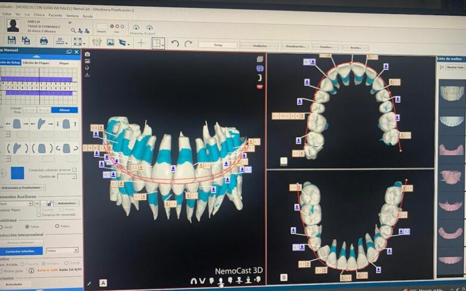
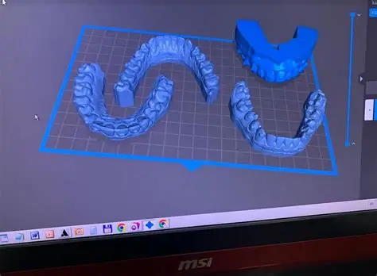

Los dientes son las estructuras más duras del cuerpo humano. Pueden soportar incendios extremos, humedad prolongada y el paso de los años sin degradarse. Por esto, la odontología forense es crucial cuando otros métodos de identificación fallan.


El método se basa en la comparación detallada. Los especialistas toman registros de las piezas dentales del cadáver (arreglos, coronas, faltantes) y los comparan con los expedientes clínicos y radiografías proporcionados por dentistas familiares.
Otra faceta fascinante es el análisis de marcas de mordedura. Si un agresor muerde a una víctima, los peritos pueden moldear esa huella en la piel y compararla con la dentadura de los sospechosos, aportando un indicio clave para vincularlos directamente con la agresión.